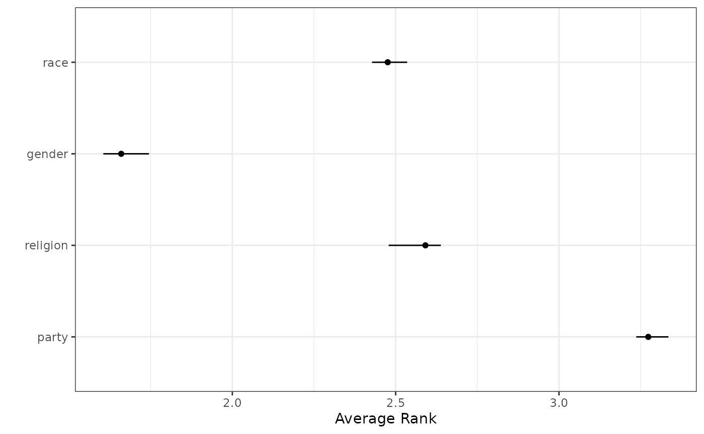

2. Correcting Bias in Ranking Data
Yuki Atsusaka and Seo-young Silvia Kim
Source:vignettes/v2-bias-correction.Rmd
v2-bias-correction.RmdEstimating the Proportion of Random Responses
In the identity dataset, given
anc_correct_identity, the raw proportion of those who have
correctly or incorrectly answered the anchor question is as follows:
round(prop.table(table(identity$anc_correct_identity)) * 100, digits = 1)##
## 0 1
## 30.3 69.7The 69.7% seen here, however, is likely an upwardly biased estimate
of the percentage of non-random responses, because we must account for
respondents accidentally answering the question correctly. For an
unbiased estimation of random responses, we use
unbiased_correct_prop.
identity$random_identity <- case_when(
identity$anc_correct_identity == 1 ~ 0,
TRUE ~ 1
)
unbiased_correct_prop(
sum(identity$random_identity == 0) / sum(!is.na(identity$random_identity)),
J = 4
)## [1] 0.6836776The revised estimate of non-random responses is 68.4%. That is to say, roughly 31.6% of the respondents are randomly responding.
Direct Bias Correction via imprr_direct
rankingQ has two primary functions to perform bias
correction. First, imprr_direct improves
ranking data by applying direct bias
correction to several classes of quantities of interest.
To apply the bias correction, we specify our dataset
(data), the number of items (J), the prefix of
column names that contain J items for the target ranking
questions, and the prefix of column names for the anchor ranking
questions. When survey weights are available, they can be included by
specifying weight in the function.
## app_identity_1 indicates marginal rank for party
## app_identity_2 indicates marginal rank for religion
## app_identity_3 indicates marginal rank for gender
## app_identity_4 indicates marginal rank for race
# Perform bias correction
out_direct <- imprr_direct(
data = identity,
## Not strictly necessary if app_identity, the input for `main_q`,
## is specified. In that case, will look for J if unspecified
J = 4,
## automatically looks for
## app_identity_1, app_identity_2, app_identity_3, app_identity_4
main_q = "app_identity",
anc_correct = "anc_correct_identity",
# setting to 10 only for our vignette
n_bootstrap = 10
)By default, imprr_direct assumes that the target
population is a set of non-random respondents. When researchers wish to
study the entire population as a target group, additional arguments must
be specified, including population and
assumption. For example, the uniform preference assumption
can be specified as follows:
# Perform bias correction for the entire population with the uniform preference assumption
out_direct_uniform <- imprr_direct(
data = identity,
J = 4,
main_q = "app_identity",
anc_correct = "anc_correct_identity",
population = "all",
assumption= "uniform",
n_bootstrap = 10
)Similarly, the contaminated sampling assumption can be specified as follows:
# Perform bias correction for the entire population with the contaminated sampling assumption
out_direct_contaminated <- imprr_direct(
data = identity,
J = 4,
main_q = "app_identity",
anc_correct = "anc_correct_identity",
population = "all",
assumption= "contaminated",
n_bootstrap = 10
)Results: Estimated Proportion of Random Responses
The first output of imprr_direct is the estimated
proportion of random responses. The vector est_p_random
returns the estimated proportion along with the lower and upper ends of
its corresponding 95% confidence interval.
# Estimated proportion of random responses with a 95% CI
out_direct$est_p_random## mean lower upper
## 1 0.3150687 0.2899944 0.3442659Results: Estimated Quantities of Interest
The other output is the bias-corrected estimates of four classes of ranking-based quantities, including
- average ranks
- pairwise ranking probabilities
- top-k ranking probabilities
- marginal ranking probabilities
The output tibble qoi stores the estimated quantities
and their corresponding 95% CIs.
# View the results based on the quantity of interest
out_direct$results %>%
filter(qoi == "average rank")## # A tibble: 4 × 6
## # Groups: item, qoi [4]
## item qoi outcome mean lower upper
## <chr> <chr> <chr> <dbl> <dbl> <dbl>
## 1 app_identity_1 average rank Avg: app_identity_1 3.27 3.24 3.33
## 2 app_identity_2 average rank Avg: app_identity_2 2.59 2.48 2.64
## 3 app_identity_3 average rank Avg: app_identity_3 1.66 1.61 1.74
## 4 app_identity_4 average rank Avg: app_identity_4 2.48 2.43 2.54## # A tibble: 11 × 6
## # Groups: item, qoi [4]
## item qoi outcome mean lower upper
## <chr> <chr> <chr> <dbl> <dbl> <dbl>
## 1 app_identity_1 average rank Avg: app_identity_1 3.27 3.24 3.33
## 2 app_identity_1 marginal ranking Ranked 1 0.0407 0.0232 0.0496
## 3 app_identity_1 marginal ranking Ranked 2 0.150 0.137 0.163
## 4 app_identity_1 marginal ranking Ranked 3 0.305 0.275 0.336
## 5 app_identity_1 marginal ranking Ranked 4 0.504 0.475 0.541
## 6 app_identity_1 pairwise ranking v. app_identity_2 0.357 0.333 0.374
## 7 app_identity_1 pairwise ranking v. app_identity_3 0.108 0.0739 0.136
## 8 app_identity_1 pairwise ranking v. app_identity_4 0.262 0.238 0.284
## 9 app_identity_1 top-k ranking Top-1 0.0407 0.0232 0.0496
## 10 app_identity_1 top-k ranking Top-2 0.306 0.291 0.339
## 11 app_identity_1 top-k ranking Top-3 0.726 0.697 0.770For example, one can visualize the result for average ranks as follows:
# Plot the result
out_direct$results %>%
mutate(
item = factor(
item, levels = paste0("app_identity_", seq(4)),
labels = c("party", "religion", "gender", "race")
)
) %>%
plot_average_rank()
Weighting-Based Bias Correction via imprr_weight
The alternative methods for bias correction is based on the idea of
inverse-probability weighting. imprr_weight
improves ranking data by computing
bias correction weights, which can be used to correct
for the bias in the inverse-probability weighting framework. The same
arguments previously used can be used as follows:
# Perform bias correction
out_weights <- imprr_weights(
data = identity,
J = 4,
main_q = "app_identity",
anc_correct = "anc_correct_identity"
)By default, imprr_weights assumes that the target
population is a set of non-random respondents. When researchers wish to
study the entire population as a target group, additional arguments must
be specified, including population and
assumption. For example, the uniform preference assumption
can be specified as follows:
# Perform bias correction with the uniform preference assumption
out_weights_uniform <- imprr_weights(
data = identity,
J = 4,
main_q = "app_identity",
anc_correct = "anc_correct_identity",
population = "all",
assumption = "uniform"
)Similarly, the contaminated sampling assumption can be specified as follows:
# Perform bias correction with the uniform preference assumption
out_weights_contaminated <- imprr_weights(
data = identity,
J = 4,
main_q = "app_identity",
anc_correct = "anc_correct_identity",
population = "all",
assumption = "contaminated"
)Results: Estimated Weights
The output of imprr_weights contains the set of weights
for all possible ranking profiles with J items. For
example, when J = 4, the set has
{1234, 1243, ..., 4321} and each profile now has an
estimated weight.
## ranking weights
## 1 1234 0.0000000
## 2 1243 0.0000000
## 3 1324 0.0000000
## 4 1342 0.0000000
## 5 1423 1.0158812
## 6 1432 0.4078355
## 7 2134 0.8582397
## 8 2143 0.8070574
## 9 2314 0.7456387
## 10 2341 0.0000000
## 11 2413 1.1316994
## 12 2431 0.5767371
## 13 3124 1.0238295
## 14 3142 0.5400194
## 15 3214 0.8251218
## 16 3241 0.0000000
## 17 3412 1.2733020
## 18 3421 1.0314721
## 19 4123 1.2628998
## 20 4132 1.1045545
## 21 4213 1.0388263
## 22 4231 0.4999637
## 23 4312 1.2711103
## 24 4321 1.0593130Results: Estimated PMF with Bias Corrected Data
imprr_weight also returns the estimated probability mass
function of all ranking profile before and after bias correction.
## ranking prop_obs prop_bc
## 1 1234 0.012939002 0.000000000
## 2 1243 0.010166359 0.000000000
## 3 1324 0.012939002 0.000000000
## 4 1342 0.006469501 0.000000000
## 5 1423 0.046210721 0.046944603
## 6 1432 0.018484288 0.007538549
## 7 2134 0.033271719 0.028555111
## 8 2143 0.030499076 0.024614506
## 9 2314 0.027726433 0.020673901
## 10 2341 0.005545287 0.000000000
## 11 2413 0.064695009 0.073215306
## 12 2431 0.022181146 0.012792690
## 13 3124 0.047134935 0.048258138
## 14 3142 0.021256932 0.011479155
## 15 3214 0.031423290 0.025928041
## 16 3241 0.011090573 0.000000000
## 17 3412 0.126617375 0.161222159
## 18 3421 0.048059150 0.049571673
## 19 4123 0.118299445 0.149400343
## 20 4132 0.059149723 0.065334095
## 21 4213 0.048983364 0.050885208
## 22 4231 0.020332717 0.010165620
## 23 4312 0.124768946 0.158595089
## 24 4321 0.051756007 0.054825814Estimated Weights with Original Data
identity_w <- out_weights$results
head(identity_w)## # A tibble: 6 × 19
## weights s_weight app_identity ranking app_identity_1 app_identity_2
## <dbl> <dbl> <chr> <chr> <dbl> <dbl>
## 1 1.02 0.844 1423 1423 1 4
## 2 1.02 0.886 1423 1423 1 4
## 3 1.27 2.96 3412 3412 3 4
## 4 1.02 0.987 1423 1423 1 4
## 5 1.10 1.76 4132 4132 4 1
## 6 1.02 0.469 3124 3124 3 1
## # ℹ 13 more variables: app_identity_3 <dbl>, app_identity_4 <dbl>,
## # anc_identity <chr>, anc_identity_1 <dbl>, anc_identity_2 <dbl>,
## # anc_identity_3 <dbl>, anc_identity_4 <dbl>, anc_correct_identity <dbl>,
## # app_identity_recorded <chr>, anc_identity_recorded <chr>,
## # app_identity_row_rnd <chr>, anc_identity_row_rnd <chr>,
## # random_identity <dbl>
# save(identity_w, file = "data/identity_w.rda")